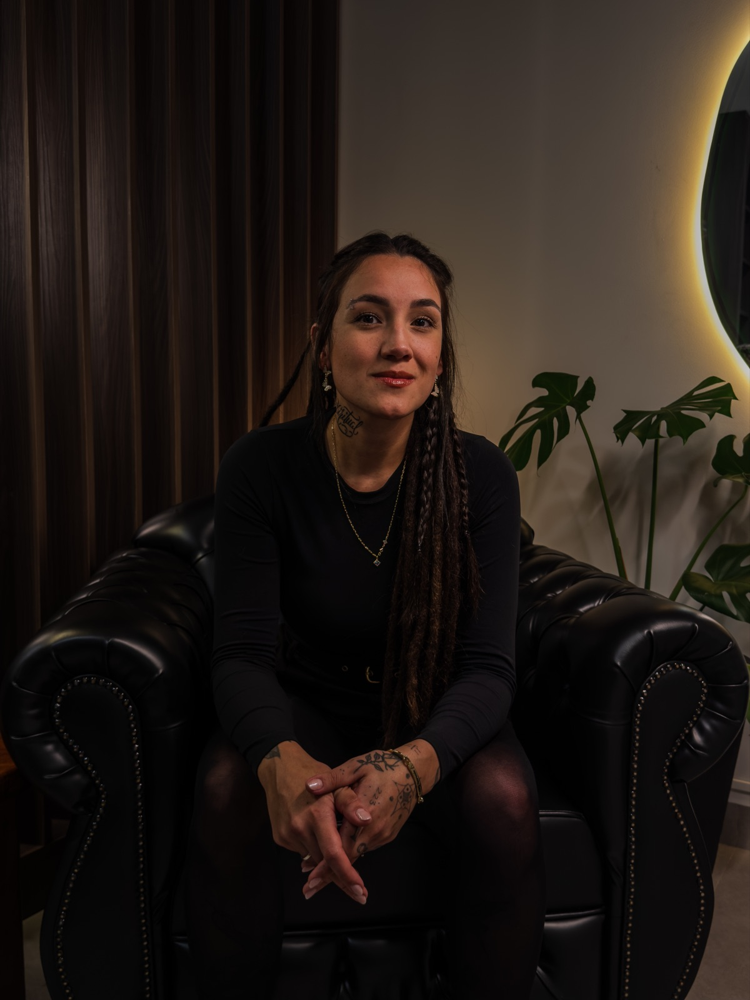
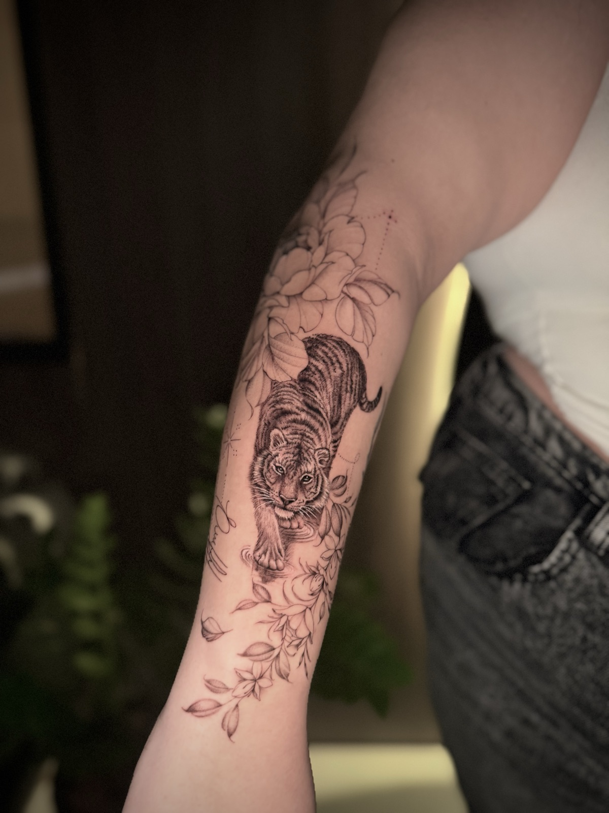

Traços finos que contam quem você é.
Especialista em traços finos e microrrealismo. Cada projeto é desenhado do zero, exclusivamente para você — para quem busca identidade e significado na pele.


“O valor de cada tatuagem é único, assim como cada projeto é desenvolvido unicamente para cada pessoa.”
Sou a Larissa Johann, tatuadora no Artheon Tattoo Studio, em Cascavel. Trabalho com traços finos e microrrealismo, unindo detalhe, delicadeza e elementos geométricos para criar peças que carregam a sua história.
Trabalhos na pele.
Uma seleção de projetos autorais. Toque em uma imagem para ampliar.
Mais projetos e bastidores no Instagram.
@lariink.tattooDa sua ideia à pele.
Atendimento com horário agendado, online ou presencial — como você preferir. Do primeiro contato ao resultado final, cada etapa é pensada para o seu projeto.
-
01
Primeiro contato
Você preenche o formulário ou chama no WhatsApp e me conta a sua ideia.
-
02
Orçamento
Online ou presencial (com horário agendado). O valor considera tamanho, local, detalhes e complexidade.
-
03
Criação da arte
Seu projeto é desenvolvido de forma exclusiva, a partir da sua história e das suas referências.
-
04
Sessão & resultado
No dia marcado, a arte vai para a pele — e você recebe as orientações de cuidado para o seu caso.
O que você me envia
- Nome e idade
- O local do corpo que quer tatuar
- Tamanho aproximado (se possível, em centímetros)
- Sua ideia — em texto, áudio ou imagens de referência
- Detalhes que você considera indispensáveis
- Se prefere atendimento online ou presencial
A partir deR$ 250
Cada orçamento é personalizado conforme o projeto.
Solicitar orçamentoO resultado começa antes da agulha.
Os cuidados antes e depois da sessão são tão importantes quanto o desenho. Uma tatuagem bonita por muitos anos depende também de você.
Evite
- Coçar ou tirar as casquinhas
- Expor a tatuagem ao sol
- Excesso de pomada
- Entrar em piscina e mar
Também evite
- Roupas apertadas sobre a região
- Bater ou ter contato com coisas e ambientes que possam prejudicar
- Aplicar produtos que não foram indicados pela profissional
Prepare a pele
- Hidrate bem a região
- Evite exposição solar
Prepare o corpo
- Não consuma álcool nas 24h anteriores
- Evite medicamentos que afinam o sangue
- Faça uma boa refeição antes da sessão
Uma boa tatuagem começa com um bom profissional. Uma tatuagem bonita por muitos anos depende também dos seus cuidados.
Vamos criar a sua próxima tattoo?
As vagas são limitadas e cada projeto é analisado pela Larissa. Envie a sua aplicação — leva menos de 1 minuto — ou, se preferir, fale direto no WhatsApp.
- Estúdio
- Artheon Tattoo Studio
- Cidade
- Cascavel – PR
- Atendimento
- Com horário agendado
Online ou presencial - Investimento
- A partir de R$ 250
Aplique para o seu projeto exclusivo.
- 4 perguntas rápidas, direto no celular
- A Larissa analisa a sua ideia antes de responder
- Orçamento personalizado, online ou presencial